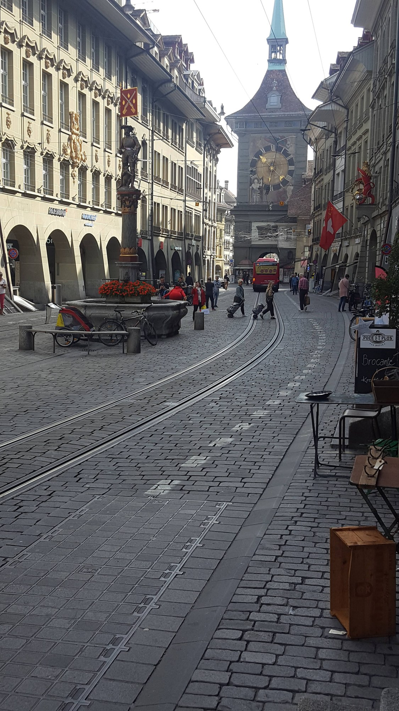
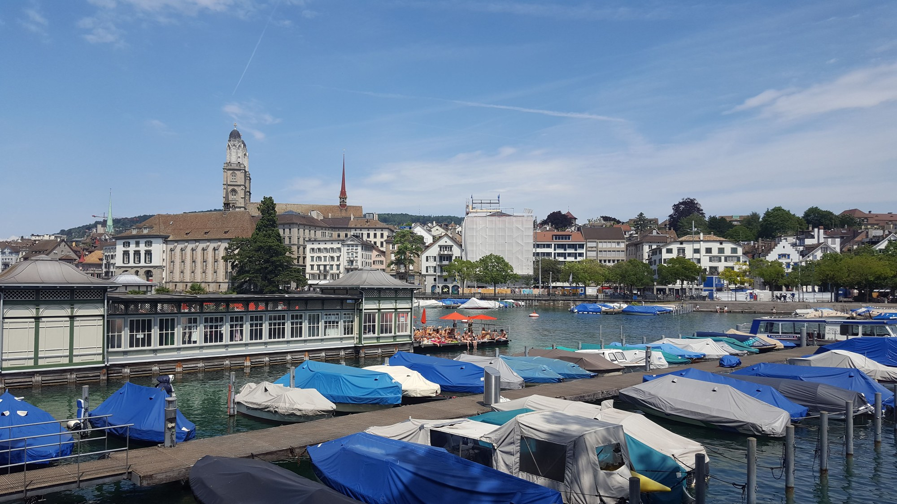
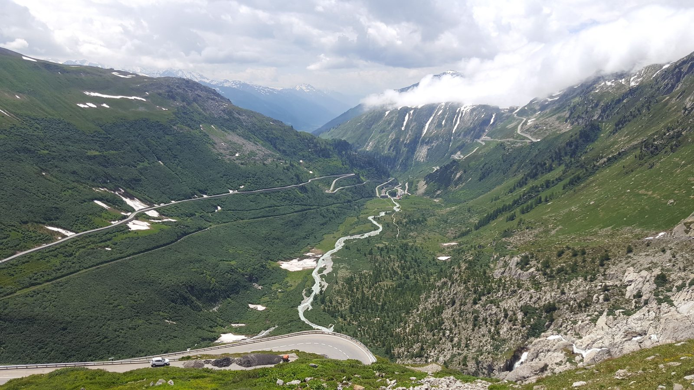
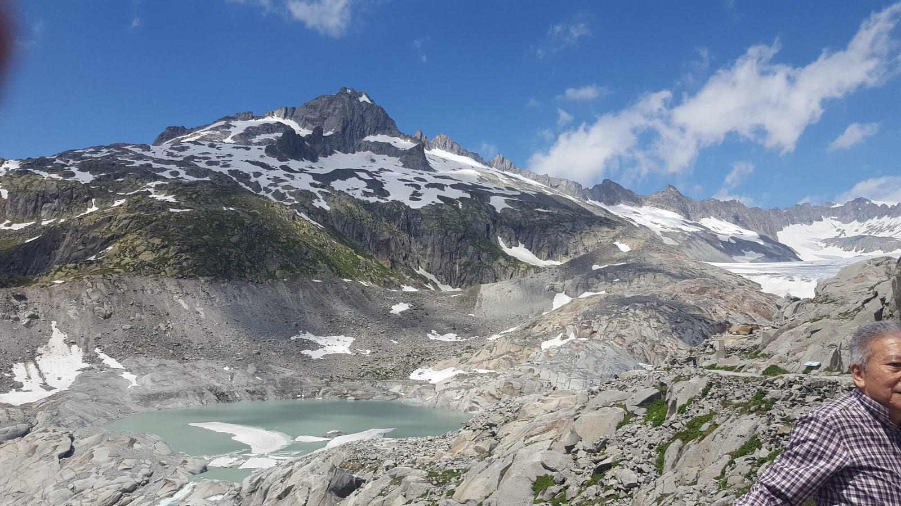
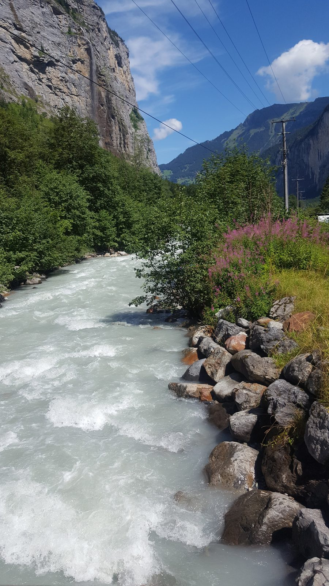
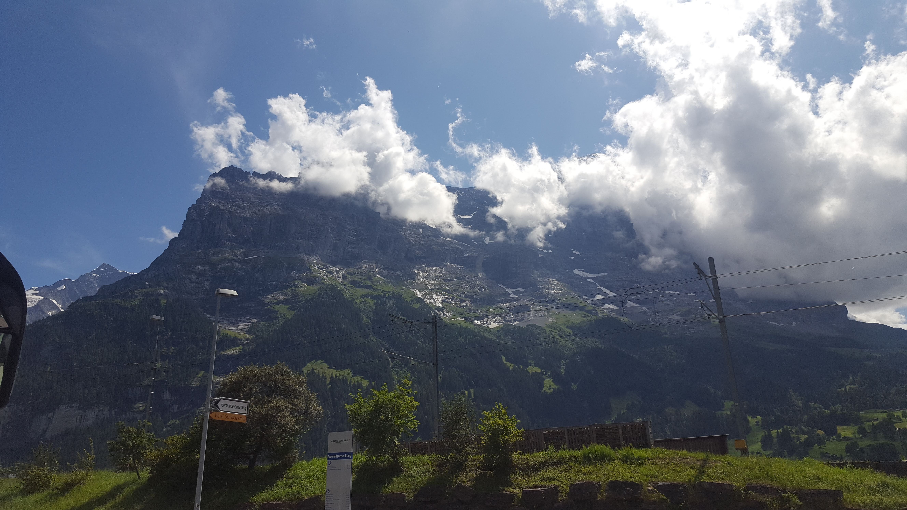
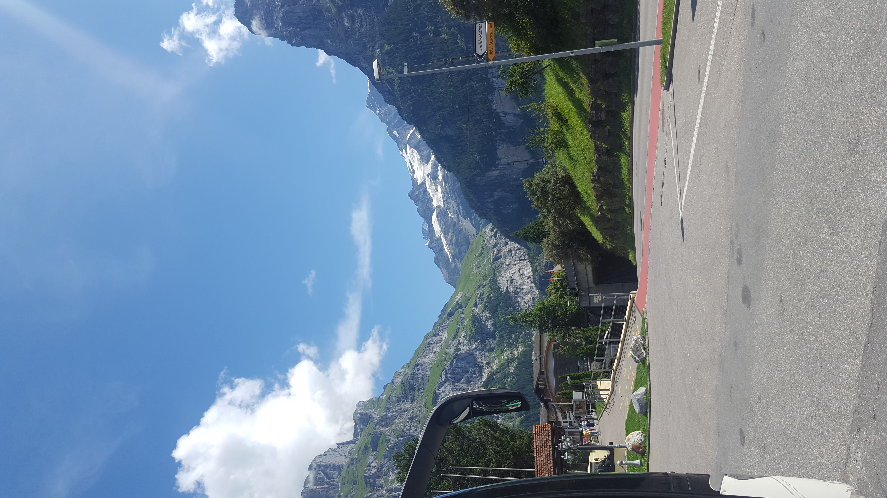
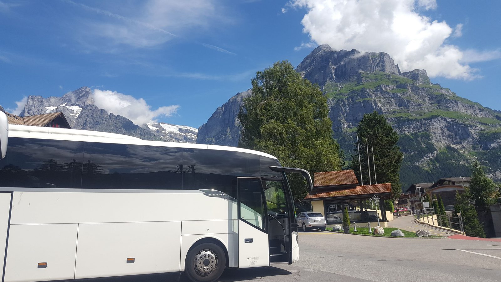
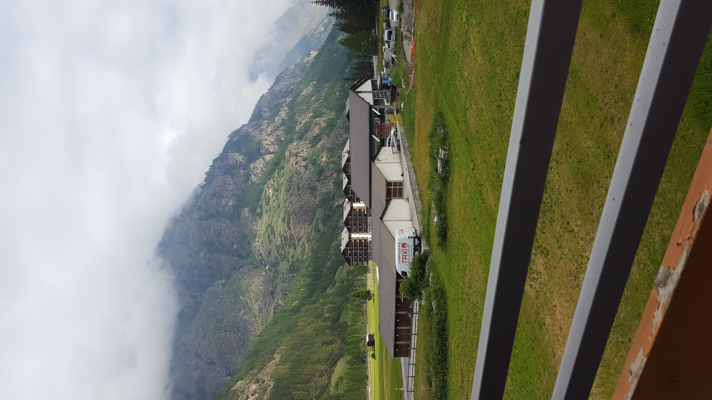

Švýcarsko — města, údolí a ledovec
Bern a Curych, Furkapass s ledovcem Rhôny a údolí u Stechelbergu. Vzpomínky na cesty v letech 2018 a 2019.
Pro koho je tato stránka: kdo chce vidět Švýcarsko z více ročních období — od jara po podzim 2018–2019. Většinou pracovní cesty s autobusem, ale i osobní zastávky.
Jak to číst: sekce jsou chronologicky. Nahoře je rok 2018, dolů 2019 a na konci Ženeva.
Pár slov
Švýcarsko je země, kde každý kantonis vlastní krajinu. Bernské Alpy s vrcholy 4000+ m, Lac Léman a Ženeva s francouzským rázem, Lucern s dřevěným mostem Kapellbrücke. Cestování po Švýcarsku je drahé, ale vlaky tam jezdí jako hodinky — a výhledy z nich jsou součást jízdenky.
🏔 Květen 2018
Jaro v alpských údolích. (3 fotografií · květen 2018)
🏔 Květen 2018 (g)
Další záběry z téhož období. (2 fotografií · květen 2018)
🏔 Květen 2019
Jarní cesta, čerstvý sníh ještě na hřebenech. (2 fotografií · květen 2019)
🏔 Červen 2019
Začátek alpského léta. (1 fotografií · červen 2019)
🏔 Červenec 2019
Vrchol sezóny, hory v plné barvě. (10 fotografií · červenec 2019)
🏔 Srpen 2019
Pozdní léto v Alpách. (7 fotografií · srpen 2019)

🏔 Září 2019
Začátek podzimu. (4 fotografií · září 2019)
🏛 Ženeva
Lac Léman, Jet d’Eau (140m vodotrysk), katedrála sv. Petra. (13 fotografií · září 2019)
Bern
Věž Zytglogge mezi domy starého města. Září 2019.

Curych
Lodě u nábřeží a věže historického centra. Červenec 2019.

Furkapass a ledovec Rhôny
Serpentiny nad Gletschem a ledovcové jezero. Červenec 2019.


Stechelberg v údolí Lauterbrunnen
Vodopád na skalní stěně a řeka v alpském údolí. Srpen 2019.


Grindelwald
Horské výhledy a zastávka v Grindelwaldu. Srpen 2019.



Täsch — cestou k Zermattu
Výhled z Täschu v údolí Mattertal. Červenec 2019.
